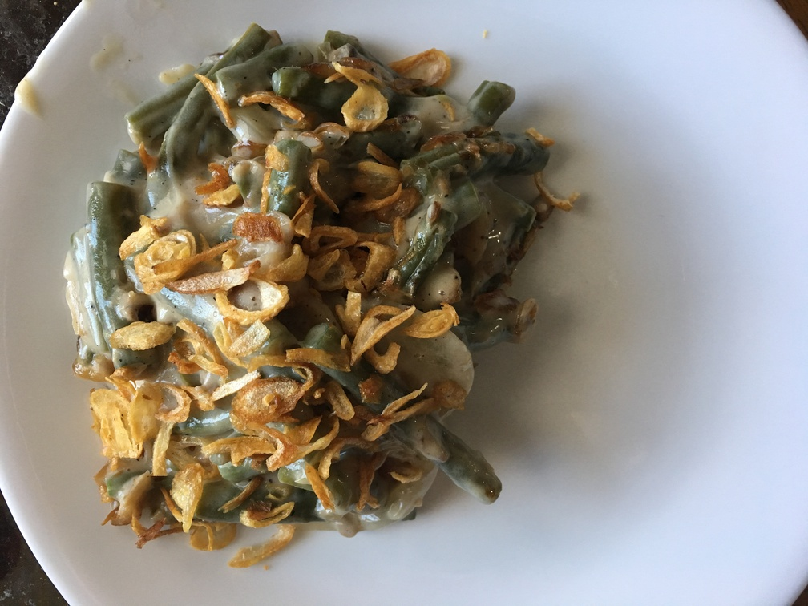

| Other | Meat | Veggie | Fruit |
|---|---|---|---|
| chicken broth | garlic | ||
| cream | green beans | ||
| flour | hanh kho | ||
| lemon juice | mushrooms | ||
| pepper | onion | ||
| salt | |||
| soy sauce |
| instructions |
|---|
| Preheat oven to 450F |
| Combine 2 tsp soy sauce, 2 tsp lemon juice, 2 c chicken broth, 1.5 c cream in a bowl |
| Stir fry sliced mushrooms and onions with minced garlic |
| Add 0.25 c flour and the liquid mixture |
| Bring to a boil, then reduce until mixture has a thick consistency |
| Season with salt and pepper |
| Cut the green beans into thumb sized pieces |
| Blanche green beans |
| Combine green beans, mushroom sauce, and hanh kho in a casserole dish |
| Bake for 15-20 min |
| Sprinkle with more hanh kho |